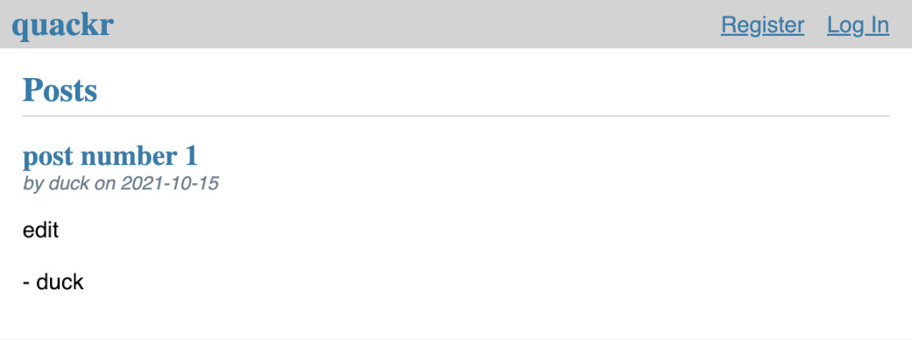

Social Media Site
GitHub Source Code Overview
It's no Twitter, but Quackr is a functioning social media site where users can log in and make posts.
Deployment
My goal for this project was to deploy a dynamic website using Google App Engine. Quackr was built using Flask's documentation.
Challenges
Cost. Using the Google App Engine flex environment means at least one instance is running at all times. I learned that by default, two instances spin up when you deploy to GAE flex, so I added manual scaling to my app.yaml to limit the instances to one. Although doing this cut the cost in half, it's still relatively expensive to run a personal project on here. So, I created a dev version of my site that I can toggle on and off with one Google Cloud SDK command. Unfortunately, this means I generally leave the site down unless I'm working on it. In the future, I may switch to the GAE standard environment, but I understand there are some differences such as not being able to use a Dockerfile to modify the runtime. Currently, the site is hosted here on Render using their free tier service.